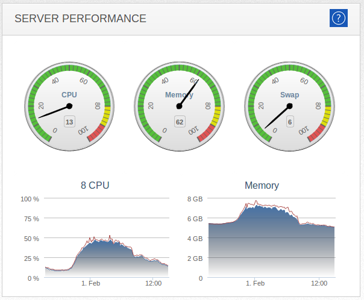

Building a metrics library.. and abandoning it again
Author: Kasper B. Graversen
[Introduction] [All categories] [All articles] [Edit article  ]
]
Monitoring
Metrics
A tale of how we created a simple monitoring mechanism for our application. The implementation cover the foundation of monitoring frameworks in general. As our implementation grew in size and complexity, we realized our mistake and replaced it with an existing framework on the market.
Please show your support by sharing and voting:



Table of Content
- 1 Introduction
- 2 The home brew metrics library implementation
- 3 Evaluation
- 4 Introducing the Okanshi library
- 5 Summary
1 Introduction
The other day I was writing a service that would fetch data, transform it and ship it to some other service. The thing about services, especially when you have many of them, is that you really would want to know how they are doing. Have they crashed? Are they processing at an unusual rate etc. For that you need application metrics.
2 The home brew metrics library implementation
This is how it started. Since I only wanted to know the successes of my application I defined a simple class SpeedOMeter. "How hard could it be?" I reckoned.. And from there I went down a rabbit hole. Our implementation gradually increased in size and complexity, as more and more issues revealed themselves.
class Speedometer
{
public int Success { get; }
public void RegisterSuccess(){ Success++; }
}
2.1 Speedometer - counting failures
It didn't last long however, until I realized that knowing the number of failures was just as important, if not more. Thus I extended the application.
class Speedometer
{
public int Success { get; }
public int Fail { get; }
public void RegisterSuccess(){ Success++; }
public void RegisterFail(){ Fail++; }
}
2.2 Business code that is being monitored
We almost forgot. We need some business code that we want to monitor.
class BusinessLogic
{
public void Execute()
{
while(true)
{
var rows = Db.Fetch(...);
foreach(var row in rows)
{
var success = DoStuff(row);
if(success)
speedOMeter.RegisterSuccess();
else
speedOMeter.RegisterFail();
}
}
}
}
2.3 Speedometer - measuring the rate
So know we how roughly how the application is doing, but we do not know if the service lives up to its "SLA". It turns out, that the service had to process and deliver a certain amount of messages a day. Hence, the rate of processing is important too. With the rate in hand, I can quickly verify if my initial implementation is fast enough or if optimizations are required. It also helps us when we, in the future, extend the functionality that perhaps impact performance negatively.
To measure the rate, we need a time dimension. We group our two counters Success and Fail in a class Measurement along with a timespan.
public class Measurement
{
const int MillisecondsPrHour = 1000 * 3600;
public int Fail = 0;
public int Success = 0;
public TimeSpan Duration;
public int Total => Fail + Success;
public double MessagesPrHour =>
Math.Abs(Duration.TotalMilliseconds) < 1
? 0
: (Total * MillisecondsPrHour) / Duration.TotalMilliseconds;
}
and
We use this class from our SpeedOMeter. Notice how when we query for a measurement, we get the accumulated metrics since last we queried. This works fine as long as only one client is querying.
public class SpeedOMeter
{
DateTime startTime = DateTime.Now;
Measurement measurement = new Measurement();
public void RegisterSuccess() { measurement.Success++; }
public void RegisterError() { measurement.Fail++; }
public Measurement GetSpeedAndReset()
{
measurement.Duration = DateTime.Now - startTime;
Measurement result = measurement;
measurement = new Measurement();
startTime = DateTime.Now;
return result;
}
}
2.4 Thread safety
Up until this point we disregarded threads altogether. In order to speed my service up, it concurrently handles messages in threads. But this means, we must ensure thread safety. The easiest way I know to do this is to lock down shared resources using Lock. I don't mind using locks since I know they are really fast. I've investigated this and documented my findings on http://firstclassthoughts.co.uk/Tags/lock.html.
Basically, we lock down every access to the SpeedOMeter class.
public class SpeedOMeter
{
readonly object _lock = new object();
DateTime startTime = DateTime.Now;
Measurement measurement = new Measurement();
public void RegisterSuccess()
{
lock (_lock) { measurement.Success++; }
}
public void RegisterError()
{
lock (_lock) { _measurement.Fail++; }
}
public Measurement GetSpeedAndReset()
{
lock (_lock)
{
measurement.Duration = DateTime.Now - startTime;
Measurement result = measurement;
measurement = new Measurement();
startTime = DateTime.Now;
return result;
}
}
}
2.5 Pulling out measurements
Now that we have all the measuring scaffolding in place, we still need something that at regular intervals pulls out the metrics and published them. I read a long running task for this in my main thread where the service starts.
void ServiceStart()
{
var speedoMeter = new SpeedOMeter();
var cancellationTokenSource = new CancellationTokenSource();
var token = cancellationTokenSource.Token;
speedOMeterTask = Task.Run(() =>
{
var client = new LogSystemClient("127.234.211.233");
var health = new MetricsObserver(client, speedoMeter);
var frequency = TimeSpan.FromMinutes(5);
health.Execute(token, frequency);
}
...
This rely on an actual implementation MetricsObserver that pulls out the data and converts it for some receiver system (Splunk, Elastic Search, InfluxDb, ...). We try to "play nice" by supporting the cancellation token in the event some one is trying to stop our service.
class MetricsObserver
{
readonly IClient client
readonly SpeedOMeter speedoMeter;
public MetricsAndHealthcheck(ILogger logger, SpeedOMeter speedoMeter)
{
client = logger;
speedoMeter = speedoMeter;
}
public void Execute(CancellationToken token, TimeSpan frequency)
{
while (!token.IsCancellationRequested)
{
var cancelled = token.WaitHandle.WaitOne(frequency);
if (cancelled)
break;
var measurement = speedoMeter.GetSpeedAndReset();
string json = JSon.Convert(measurement);
client.Transmit(json);
}
}
}
Oh, and perhaps we should use async when pulling out the metrics and submitting them...
3 Evaluation
To evaluate. We ended up with quite a bit of code. More than first anticipated! And admittedly, it was great fun to do! The code was fairly easy for me to churn out, but I also suspect my experience in the field being the explanation, as some non-trivial concepts are involved. And perhaps my implementation still has some glaring omissions and bugs. I haven't used the code enough for me to say.
One thing is for certain, if we choose to stick with the implementation, the code needs be extracted into a reusable library. We don't want general infrastructure code in our service. Inevitably, more services will be developed that needs monitoring too. And we don't want to re-implement all of it again.
I think three things stand out in particular.
- As we use the code, we kept finding new things that needed implementing. What was a small 4 line class ended up being many classes. It is doubtful that we really have a sufficiently mature code base.
- There is a low degree of abstractions in the implementation. E.g. we can only measure one metric, and we do not support several "metric observers" since the first pulling out metrics will reset it for the next.
- There are still major missing feature points. There is no "health check" end-point or otherwise functionality to tell some monitoring system that we are alive. Or how about an OWIN integration for your webservice implementations - just to name a few.
I think those evaluation points tells us that it's time to look around for greener pastures. Find an existing monitoring library. That library will provide us a more bug-free code base, more feature rich and with more abstractions. Abd perhaps also a helpful community.
4 Introducing the Okanshi library
I've chosen to show case the library Okanshi. I have dabbled around with a few monitoring libraries, and Okanshi strikes a nice balanced between performance, sensible defaults and easy to extend to cater for your own needs. The code base is only around 1000 lines of code, most of which is fairly grokable.
Relating Okanshi to our implementation, Okanshi provides a number of various metrics we can hook into. It also provides out of the box, a scheduler for collecting metrics.
Rather than messing around with threads and tasks, you can set up scheduling of metric collection using:
void ServiceStart()
{
var api = new MonitorEndpoint();
api.Start();
This will create a http endpoint in your service from which you can poll the latest metrics. It also creates a health check endpoint.
The business logic is almost the same as before
class BusinessLogic
{
...
while(true)
{
OkanshiMonitor.BasicTimer("send").Record(() =>
{
var rows = Db.Fetch(...);
foreach(var row in rows)
{
var s = Stopwatch.StartNew();
var success = DoStuff(row);
s.Stop();
if(success)
OkanshiMonitor.BasicTimer("success").Register(s.ElapsedMilliseconds);
else
OkanshiMonitor.BasicTimer("fail").Register(s.ElapsedMilliseconds);
}
});
}
}
As you can see, we are now using the general timer BasicTimer rather than a bespoke SpeedOMeter. If we want to keep that interface, nothing prevents us from wrapping Okanshi-metrics in bespoke classes.
Another thing you may notice is that I've changed the metrics slightly. Rather than counting the success and failures and the speed, we now have three timers instead. It is not be obvious, but a BasicTimer not only measure the execution time of some code, it also count the number of invocations. I.e. it is a counter as well as a timer.
We chose the "standard route" of using in-built metrics for two reasons.
One, Okanshi does not come out of the box with a success-fail-timer like the one we created. Second, and perhaps more importantly, when working with monitoring, it is very easy to set up some metrics, and then when working with them for a while (or they don't provide the insights needed) you change them. In my case, I found that since error-handling touches the database among other things, it may be very insightful to know how the performance of the failure handling as well. So we create an overall "send" metric to calculate a speed, and two timers, one for each scenario.
5 Summary
We created our own bespoke SpeedOMeter class. It turned into a longer affair involving threads and timers. Before ending up developing a large framework ourselves, and having to find all the bug that inevitably has crept in, we chose to ditch it all and use one of the existing full-blown monitoring frameworks on the market.
But all is not lost! The implementation we presented convey the fundamentals of basically any monitoring framework out there. So thats the lesson here I guess.
Please show your support by sharing and voting:
Congratulations! You've come all the way to the bottom of the article! Please help me make this site better for everyone by commenting below. Or how about making editorial changes? Feel free to fix spelling mistakes, weird sentences, or correct what is plain wrong. All the material is on GitHub so don't be shy. Just go to Github, press the edit button and fire away.
Read the Introduction or browse the rest of the site